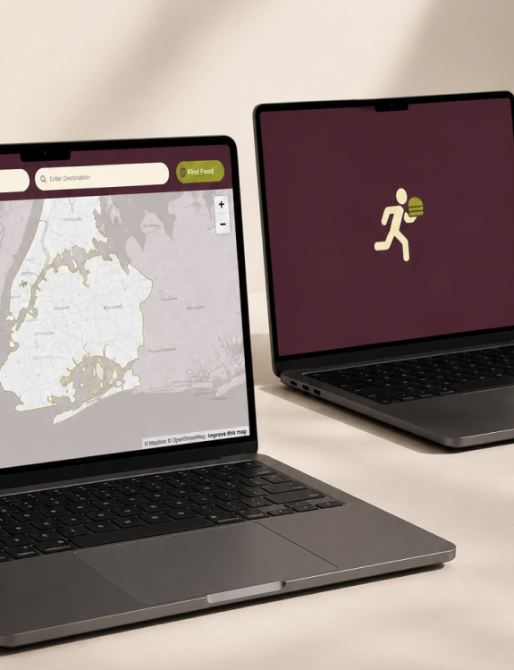
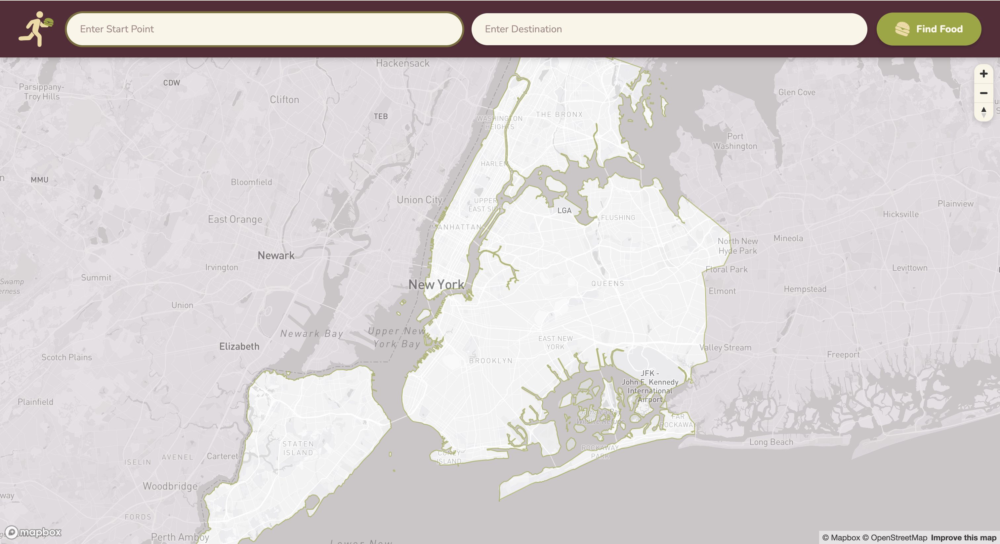
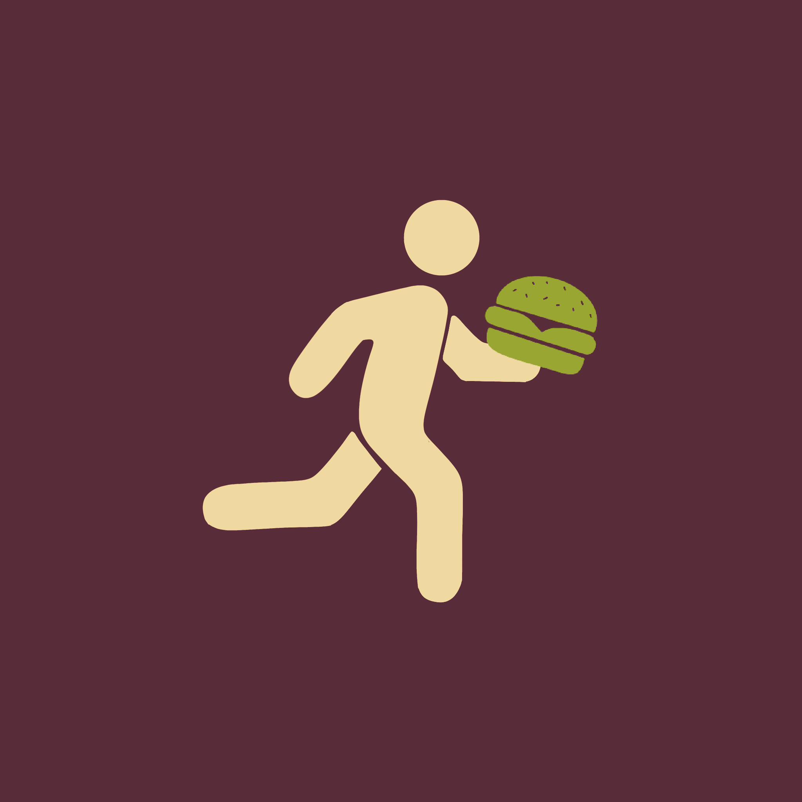
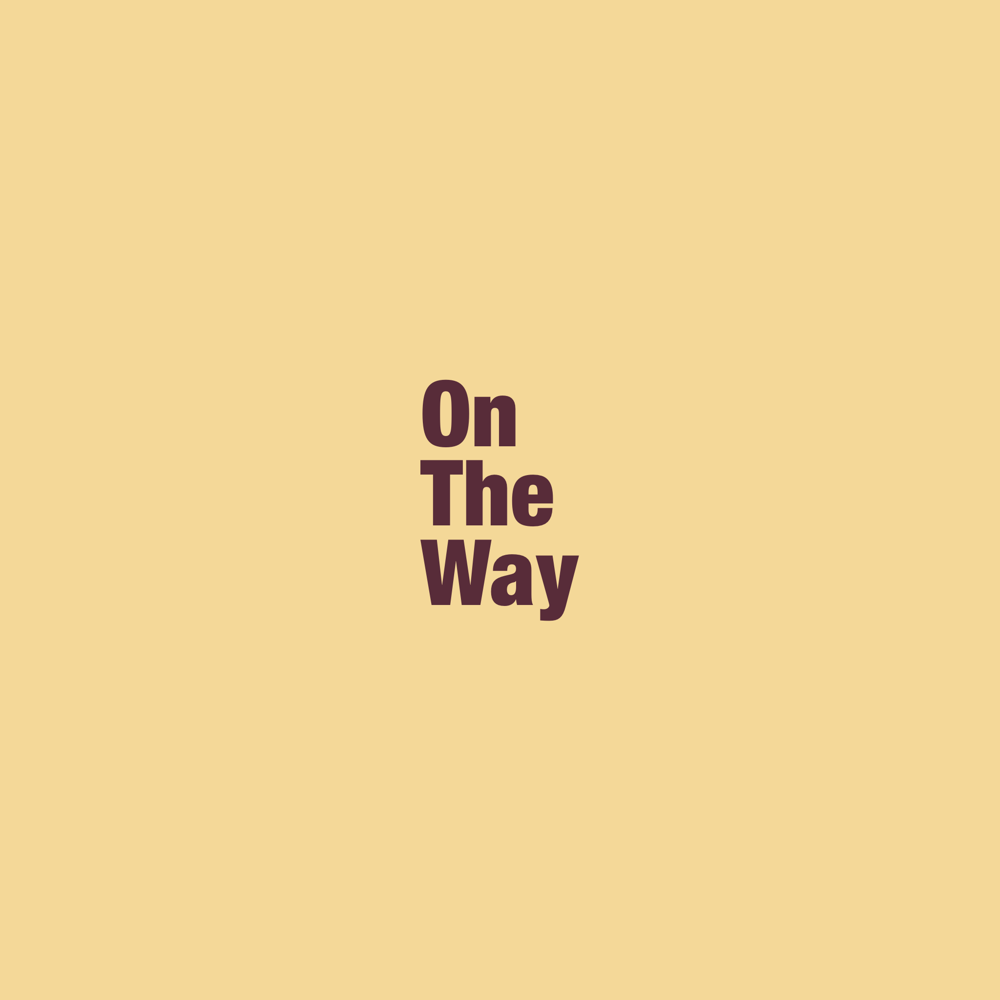

Apps ask me “What’s near me,”
But I want to know, “What’s on the way?”
The Problem & Research:
I looked at existing solutions
| Tool | Search Algorithm | Shows Detour Time? | Gap |
|---|---|---|---|
| Google Maps | Proximity | Only mid-navigation | No detour view while planning |
| Yelp | Popularity | No | Ignores your route |
| Beli | Interest + Popularity | No | Ignores your route |
| OnTheWay | Route-aware | Yes | Ranks by detour, not distance |
Today: 5 steps across several apps
With OnTheWay: 3 steps in one app
The Solution:
MVP Workflow:

Tech behind it
Because detour time decides where people stop, results rank by distance from the route first. I kept ratings as a secondary signal. Cut: sorting by popularity, which kept surfacing top-rated places far off the path.
Splitting the route into thirds and picking from each balances coverage against API cost and latency. More sample points found few extra places but added a request per point, which slowed results noticeably.
Showing everything recreated the “nearby” problem. Hiding options more than 0.5 km from the route keeps the list decision-ready.
No accounts, reservations, or multi-stop trips yet. Goal was to validate the core value: people choose where to eat by how little it adds to their trip, not by how close it is to them.
User Testing:
“I didn’t have to open Google Maps to check if it was out of the way.”Tester, commuting from Tribecca to Chelsea
What I'm working on: Testers usually check from home, using their web apps. Currently working on a mobile app version.
Reflection:
Location data is messier than it looks. Matching boroughs by address text broke on inconsistent formats, so I switched to polygon boundaries, which made the NYC filter reliable.
Minutes added per stop, compared with the top “nearby” result on the same route. If OnTheWay’s picks don’t cost less time, the idea doesn’t hold.
Multi-stop trips and cities beyond NYC. Accounts and reservations come after the core ranking is proven.

